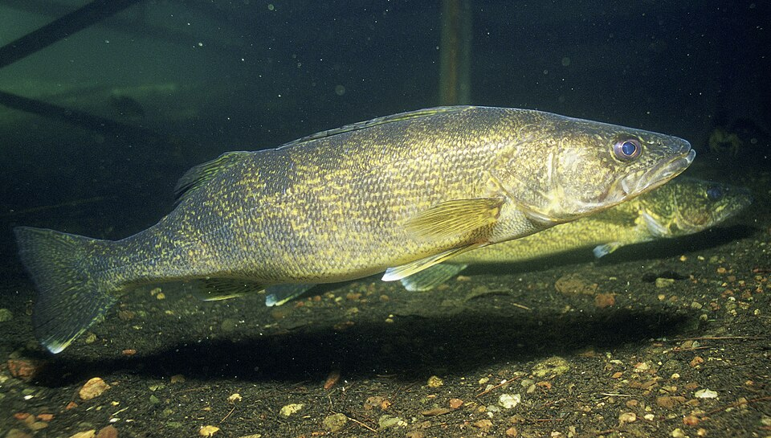

Walleye
Sander vitreus
✓ Confirmed Confirmed in 41 waters near you
Active range55–75°F
Spawning40–52°F
FeedsLow light
Documented activity
Temperature ranges from published research, not a prediction of whether the fish will bite.
Today 66°F at this spot — inside the active range.
Recommended bait
Leeches
Bait-cast or still fish from an anchored boat.
Fish
White/pale-sage instead of cream+deep-teal; near-black ink; lime accent reserved for the primary action; tag highlights recolored to AllTrails' own Easy-green / Moderate-amber.